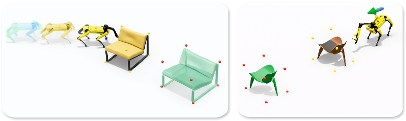

Abstract
Non-prehensile manipulation enables robots to reposition objects through contact without grasping. We study goal-directed pushing with a quadrupedal robot manipulator using a hierarchical RL framework that separates task-level decisions from low-level stabilization. A high-level policy predicts base velocity and arm joint targets; a pretrained locomotion prior executes stable movement, while a dedicated arm controller tracks arm targets. We further introduce point-cloud contact sampling to guide exploration toward feasible interactions for complex geometries. Under a shared protocol, we compare arm-mediated (AM) and whole-body (WB) pushing across object families and distribution shifts. AM improves success in most settings and shows stronger robustness, especially under physics shifts.
Overview Video
System Diagram

Method
The policy stack has two levels: a high-level goal-conditioned actor for task strategy, and a frozen low-level locomotion prior for dynamic stability. For AM, the actor outputs base velocities plus arm joint targets. For WB, it outputs base velocity commands only.
- Geometry-aware contact intent sampled from object point clouds
- Adaptive reach-reward curriculum for stable contact acquisition
- Unified task/evaluation protocol for direct AM vs WB comparison
Key Quantitative Results
| Suite | Cuboid C1 (%) | Cuboid C2 (%) | Cylinder C1 (%) | Cylinder C2 (%) |
|---|---|---|---|---|
| ID (WB) | 86.69 | 79.38 | 82.33 | 79.56 |
| ID (AM) | 91.88 | 85.63 | 92.46 | 86.35 |
| OOD-Geometry (WB) | 59.20 | 35.40 | 73.50 | 64.50 |
| OOD-Geometry (AM) | 76.24 | 61.80 | 74.37 | 65.00 |
| OOD-Physics (WB) | 67.50 | 38.12 | 51.00 | 47.50 |
| OOD-Physics (AM) | 66.87 | 51.88 | 70.00 | 66.87 |
AM is also more efficient on successful episodes: 10.40s vs 20.58s average completion time, and 5.05m vs 14.99m average base path length.